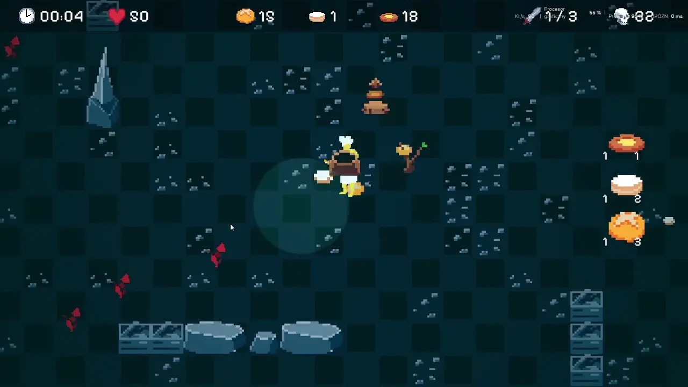

Bread Slayer
Gameplay & AI Programmer • Game Jam (4 osoby, 48h)
Dynamiczna gra akcji stworzona pod presją czasu w czteroosobowym zespole.
- Implementacja algorytmów AI i pathfindingu
- Proceduralny generator układu poziomów
- Implementacja komponentów interfejsu (UI)
- Optymalizacja i integracja assetów w silniku